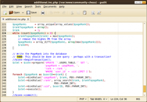
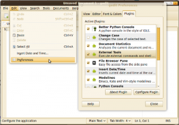
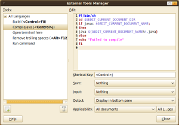

gedit is a very lightweight text editor. It supports syntax highlighting for every programming language I can think of and is highly customizable.
It belongs to GNOME, but it is also available for Windows. This is how it looks like:
{kind=link}

You might want to install gedit-plugins:
sudo apt-get install gedit-plugins
External Tools
gedit allows you to run external command line tools by pressing shortcuts. You can find the external tools plugins in your preferences:
{kind=link}

You can assign shortcuts by clicking into an input field and simply using the shortcut once:
{kind=link}

Java
#!/bin/sh
cd $GEDIT_CURRENT_DOCUMENT_DIR
if javac $GEDIT_CURRENT_DOCUMENT_NAME;
then
java ${GEDIT_CURRENT_DOCUMENT_NAME%\.java}
else
echo "Failed to compile"
fi
Code Comment
This neat little plugin detects which programming language you are using. If you select a code block and press ctrl+m it gets marked as a comment. If you press ctrl+shift+m a block of comments gets "decommented" to a block of code. It uses # for Python and // for Java.
Bracket Completion
Well, I guess the name is meaningful, isn't it? As soon as you type a bracket - (, [ or { it gets completed with }, ] or ).
Better Python Console
The Better Python Console Plugin allows you to press F5 and execute the current code in an interactive Python console. This means, you can access the current variables!
You install it by extracting and copying the whole folder (with plugins!) to ~/gnome2/gedit.
What could be better
The design could be similar to Chrome ☺ So they could have some nicer tabs. Nothing really important.
I really miss comment folding since I have to write Java code with a lot of Doc comments
Further reading and resources
- Official Website: You can find the Windows Binary here.
- External Tools
- 13 Gedit Plugins to Make It a More Useful Text Editor: Seems as if you could also have a class browser in gedit